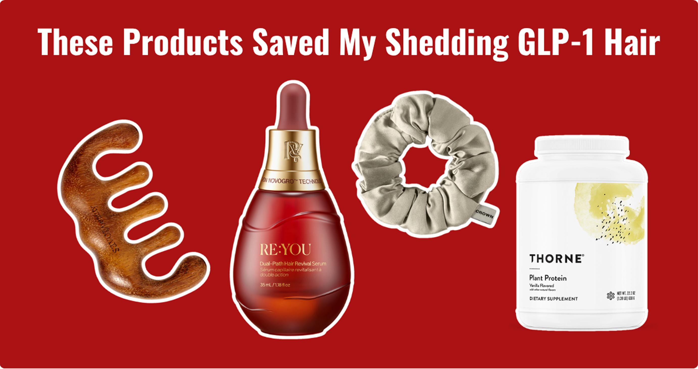

Maddie Parker writes about her GLP-1 journey: what beauty products actually made her life easier, and what’s just good marketing.
By Maddie Parker
Share:
Published Sep 24, 2026 · 6 min read

Has a GLP-1 finally helped you move the scale, but now you’re noticing shedding in your hair? Are you seeing more strands on your brush, your pillow and bathroom floor, and wondering if it’s the price of progress?
It’s even more frustrating when most solutions on the market don’t help, and give you nothing but false hope.
If you’re awake searching: “GLP-1 hair shedding” and wondering whether it will stop, whether you’ll have to choose between your hair and your health, take a breath.
You shouldn’t have to trade one kind of confidence for another. I’ve done the research in TBB fashion, and here are 4 things that helped me feel confident in my hair again, on my GLP-1 journey.
My Favorite Products for GLP-1 Hair Loss
Fix 1
A Scalp Serum (That Actually Works)
There are so many hair serums, masks and products marketed for hair loss that it’s hard to know what’s worth a try. The RE:YOU Dual-Path Hair Revival Serum contains new generation actives that actually target the source of GLP-1 hair thinning.
The “dual-path” approach is not just a marketing gimmick. The serum contains a newly discovered trio of molecules called NOVOGRO™ that work together to improve both the hair follicles’ health, and the scalp environment around them.
The texture was also so light that I forgot it was in my scalp, and didn’t give me that greasy look that emphasizes my thinning spots. I noticed baby hairs growing about 1 month into using it, which is the fastest I’ve ever seen results from a serum.
Hair is 90% keratin, so amino acids from the protein you consume will be the building blocks for regrowing your hair. Eating less on a GLP-1 means a lot less than your body’s used to. To give your hair all that it needs, aim for 0.45-0.55 grams of protein per pound of body weight.
This one from Thorne is my favorite! It has a complete amino acid profile, and is a source of plant-based iron (helps deliver oxygen to hair follicles!).
Hairstyles that pull on your hair and using heat tools will place even more stress on your hair. If you need to put it up, try a soft claw clip or silk/satin scrunchie.
Heat styling, bleaching or perming causes dryness and breakage—take a break while your hair recovers.
My best friend while dealing with my GLP-1 hair was this silk scrunchie from Crown Affair. It has a secure hold, and it never pulled out my hair when I took it out.
Using a multi-point tool to massage my scalp every night made a huge difference. It feels amazing, and is a great way to stimulate more blood flow to your hair follicles.
I used this Scalp Fascia Gua Sha with my RE:YOU serum every night, and loved it.
Start at the sides of your hairline and move towards the back of your head. Apply gentle pressure to the hair roots in ‘combing’ and circular motions. This will deliver oxygen and those vital nutrients to your hair more efficiently.
Hair usually recovers to its full density about 18 months from the beginning of GLP-1 treatment. But just because it’s temporary doesn’t mean you have to wait it out to get your confidence back.
Remember, the hair you’re losing now was pushed into its resting phase months ago. What you do today is shaping the hair that’s growing in next.
So, stick to this routine: nutrient rich diet, a scalp serum that actually works, and being kind to your hair with massages and gentle styling. The facts speak for themselves, and I did the testing. You got this.